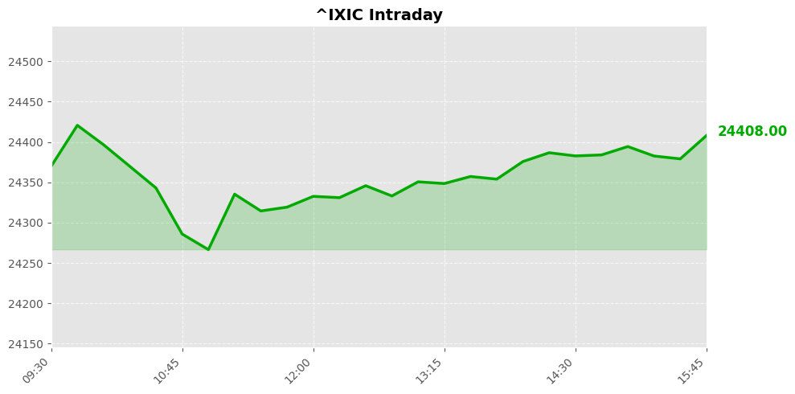
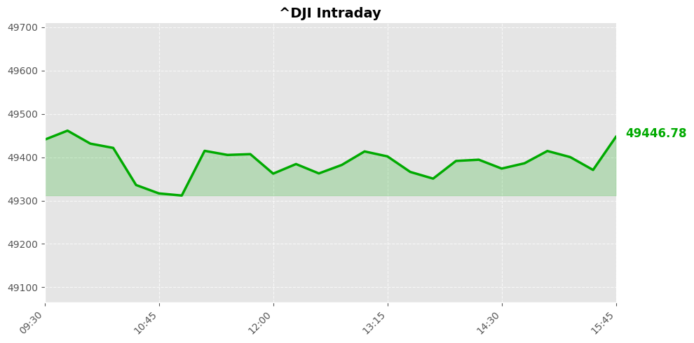
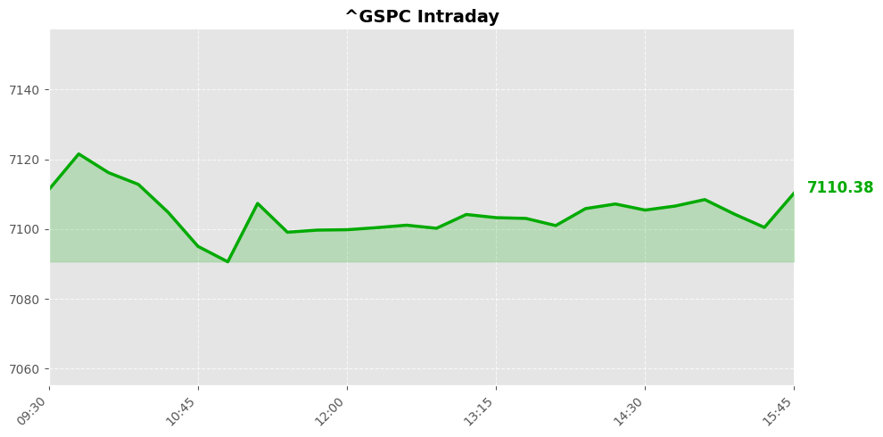

Daily Market Briefing
Market Overview



Market Analysis
The recent market performance reflects a cautious investor sentiment amidst subdued trading activity. The NASDAQ Composite declined by approximately 0.26%, closing at 24,404.39 points, indicating slight weakness in technology and growth-oriented sectors that dominate this index. The decline, while modest, suggests some profit-taking or minor concerns over sector-specific factors, possibly driven by ongoing macroeconomic uncertainties or earnings outlook adjustments.
Meanwhile, the Dow Jones Industrial Average experienced a negligible dip of 0.01%, finishing at 49,442.56 points. This stability suggests that more established, dividend-paying companies in the industrial sector are holding steady, possibly benefiting from a perception of relative safety amid broader market fluctuations. The narrow movement indicates a lack of strong directional bias, with investors perhaps awaiting clearer signals on economic data or policy developments.
The S&P 500 fell by approximately 0.24%, ending at 7,109.14 points. As a broad market barometer, this slight decline reflects a cautious stance among investors, balancing optimism about economic recovery with lingering concerns over inflation, interest rate trajectories, or geopolitical developments.
Overall, the market sentiment appears cautiously reserved, with minor declines across major indices. Investors are likely maintaining a risk-off approach, waiting for more definitive economic indicators or policy guidance to clarify the trajectory of growth and inflation. The subdued movements suggest a period of consolidation, where market participants are digesting recent gains and uncertainties before committing to more aggressive positions. This environment underscores the importance of vigilance and a focus on sector-specific fundamentals as the market navigates through evolving macroeconomic conditions.
Today's Headlines
News Analysis
Certainly. Here's an in-depth analysis based on the recent financial news:
Main Market Focus Points Today
-
Geopolitical Tensions and Oil Market Volatility: Renewed tensions between the US and Iran dominate headlines, with concerns over potential disruptions in the Strait of Hormuz—a critical chokepoint for global oil supplies. Incidents such as ship seizures and shots fired have pushed shipping activities near standstill, escalating fears of supply disruptions.
-
Market Sentiment and Equities Performance: Wall Street closed slightly lower, reflecting cautious investor sentiment amid geopolitical uncertainties. The decline appears modest, suggesting that markets are digesting these tensions without triggering widespread panic, but remain sensitive to escalation risks.
-
Energy Prices and Political Statements: Statements from key figures, including former President Trump and industry leaders, imply expectations of lower gas prices post Iran conflict, though the current environment suggests volatility. Energy stocks may experience short-term fluctuations aligned with geopolitical developments.
-
US-Iran Diplomatic Developments: Signals of ongoing negotiations, with Pakistan optimistic about Iran’s participation in US talks, suggest diplomatic efforts persist. However, the potential for an improved deal, as suggested by Trump, adds uncertainties to geopolitical outcomes.
-
Corporate Sector Insights: Notably, Eli Lilly benefits from its GLP-1 products, while Honeywell is divesting a lower-margin unit, indicating strategic shifts in the corporate landscape. Additionally, a new chip designer poised for AI-driven growth signals sector-specific optimism.
Potential Market Impact Factors
-
Supply Chain Disruptions: The strife in Hormuz threatens to inhibit oil shipments, likely causing short-term oil price spikes, which could pressure inflation and impact consumer spending. Elevated energy costs could also ripple into transportation and manufacturing sectors.
-
Investor Sentiment and Risk Premiums: Ongoing geopolitical risks tend to elevate risk premiums, potentially leading to volatility in equities, especially in energy, defense, and transportation sectors. The slight decline in the US markets indicates risk aversion but also resilience.
-
Policy and Interest Rate Trajectory: The Wells Fargo CEO’s stance on delaying rate cuts until geopolitical tensions ease suggests that monetary policy remains sensitive to international conflicts. Any indication of policy adjustments could influence bond yields and equity valuations.
-
Currency and Commodity Markets: Heightened tensions often strengthen the US dollar as a safe haven, which may impact emerging markets and commodities. Gold and other safe-haven assets could see increased demand.
Industry Trends Worth Noting
-
Energy Sector Dynamics: Rising geopolitical tensions are likely to sustain elevated energy prices. Companies involved in upstream exploration and refining might benefit in the short run, though consumer-facing sectors could face inflationary pressures.
-
Defense and Security Industry: Increased instability in the Middle East is expected to bolster defense spending, leading to growth opportunities for defense contractors and related sectors.
-
Technology and AI Growth: The mention of a chip designer poised for AI expansion highlights ongoing innovation in semiconductors. The AI sector remains a key growth driver, with investors monitoring chip supply chains and technological advancements.
-
Pharmaceutical Innovation: Eli Lilly’s success with GLP-1 therapies underscores ongoing trends towards biotech innovation and personalized medicine, indicating sector resilience amidst geopolitical uncertainties.
In summary, heightened geopolitical tensions centered around Iran and the Strait of Hormuz are key market drivers today, influencing energy prices, market sentiment, and sector-specific trends. While the immediate market reaction is cautious, underlying industry shifts, particularly in energy and technology, suggest continued opportunities amid the geopolitical landscape.
Would you like a more detailed sector-specific outlook or technical analysis of recent market movements?
Economic Indicators
Inflation Indicators
Employment Indicators
Consumer Indicators
Community Hot Stocks
| Rank | Symbol | Mentions | Source |
|---|---|---|---|
| 1 | ASTS | 129 | |
| 2 | MSTR | 83 | |
| 3 | COOK | 80 | |
| 4 | PUMP | 64 | |
| 5 | BULL | 52 | |
| 6 | RKLB | 44 | |
| 7 | AMC | 41 | |
| 8 | NVDA | 40 | |
| 9 | MSFT | 35 | |
| 10 | CARE | 35 | |
| 11 | FACT | 34 | |
| 12 | HIT | 34 | |
| 13 | AMZN | 32 | |
| 14 | ADD | 32 | |
| 15 | TACO | 30 | |
| 16 | AAPL | 25 | |
| 17 | LUCK | 25 | |
| 18 | LINK | 25 | |
| 19 | LOAN | 25 | |
| 20 | TALK | 24 |
Market Outlook
The recent market movements reflect cautious investor sentiment amid geopolitical tensions and ongoing international developments. Major US indices experienced modest declines, with the NASDAQ leading the downside at -0.26%, while the Dow and S&P 500 exhibited relatively stable but negative momentum. The primary catalyst appears to be renewed tensions between the US and Iran, particularly concerns over potential disruptions in the Strait of Hormuz, which is critical for global oil supply and shipping routes. Such geopolitical risks tend to heighten market volatility, especially in energy-sensitive sectors.
Over the short term, the market may remain vulnerable to headline-driven swings, especially if geopolitical uncertainties escalate or diplomatic efforts falter. Investors should be mindful of risks emanating from energy market disruptions, which could increase inflationary pressures and impact corporate earnings. Additionally, the potential for increased volatility might lead to a cautious or risk-off sentiment, especially among growth-oriented tech stocks, as reflected in the NASDAQ's slight decline.
Key points for investors to focus on include monitoring geopolitical developments, particularly any escalation in US-Iran relations, and their impact on energy prices and global supply chains. Corporate earnings reports and sector-specific news, such as the moves by companies like Eli Lilly and Honeywell, may also influence sentiment, especially if they signal broader economic trends or margin pressures.
In the near term, expect a consolidative phase with potential for heightened volatility. A cautious approach, with attention to macro risks and news flow, will be prudent. Defensive sectors and assets with low correlation to geopolitical risks could offer relative stability amid this uncertain environment.
Follow Us

Scan to follow StockGate
For more US stock market insights